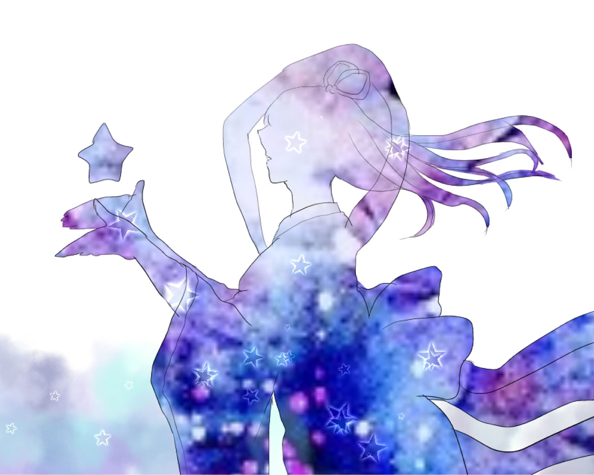
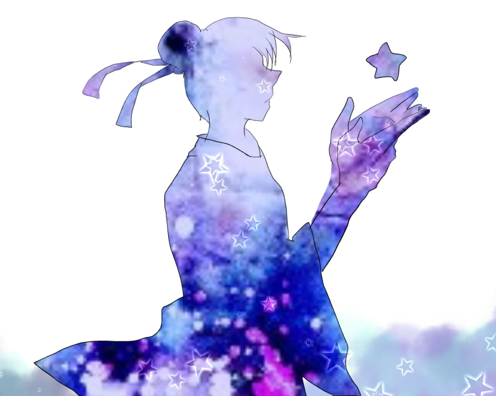

1
オフラインは快適なのか。そうでないのか？
さっそくだがここで皆に問うてみよう。
オフラインはみな快適であるか？オフラインであることに勿論快適と感じるものもいるだろう。
だが、勿論オフラインを快適だと思っていないものがいるのも事実だ。私は、どちらかというと快適だとは思えないほうだ。なぜ快適だとは思えないのか・・それは、インターネットが普及したこの世の中が一つ関係していると筆者は思う。そのことについて下記でまたお話しよう。

先程、上記でも述べたと通り、オフラインは快適なのかどうかここでは確信に迫りたいと思う。
オフラインを実施した10日間、私はここだけの話だが苦痛だった。
いかにいつも触っているスマホから離れ、書籍などに目を向け時間を潰すか。
そればかり考えていたかもしれない。だが、肝心なのはそれだけでない。
この世の中、スマホを持つことが当たり前になっている。そんな世の中だがどうだろうか？考えてもみてほしい。その大半のひとは、充電が少ないから。飛行機に乗るから。大事なことがあるから。などと言った件以外でオフラインにしたことがあるだろうか？はっきりとは言えないが恐らくあまりないだろう。
それはなぜか？筆者の私が考えるにコミュニケーションツールの一環として、自分の娯楽としてやっているゲームなどや描いた絵をアップするなどと言ったことを簡単に自ら自分の手で切ることはできるだろうか？
筆者の私なら自分が孤独になった気がして自分の手ではもう切りたくないと思ってしまう。
2
オフラインは透明の壁？
突然だがここで質問だ。
みなさんは、オフラインについてどう思いだろうか？
オフラインを体験したことがある方は一度は思ったことがあるのではないだろうか？「いらいらする」と。
筆者の私も10日間オフラインにしたのだがイラつきがすごかった。なぜこんなにもイラつきがすごいのか。イライラする原因を考えてなにげなく10日間を過ごしていたら見えてきたものがあった。
それは、私自身の分身みたいなようなもの、安心する場所を取られたり没収された感じがしたからだ。

今やいろいろなSNSがある時代、特に皆がやっているのが恐らくTwitter、LINE、Instagram と言ったところだろうか。
これら全てのアプリが”コミュニケーションツール”だということはお気づきだろうか？
そう、つまりは下記で私が没収されたみたいな気がしてと言っていたと思うが、私にとって家に帰ってもみんなと唯一話しつながることが出来るものだと思っていてそれを遮断してしまったら孤独になった気がしてみんなが私の知らない世界にまるでこちらからは見えない壁があるようだった。
3
現実と離れる場所
さて、ここまで様々なことを述べてきた筆者だが実はまだ述べたりない。
先程、オフラインのことを一枚の壁と言っていたが今回はそのことについて深く掘り下げて行こうと思う。
私がオフラインのことを一枚の透明な壁と表現したのは先程の記事で記載している。
なぜそんなことを思ったか、それは先程も述べた通り友達と唯一話ができるツールが遮断されてしまったらTwitterや画面をつなぎ会話のすこしを見ることが出来るだろうがそこには一枚の壁が出来るとは思はないだろうか